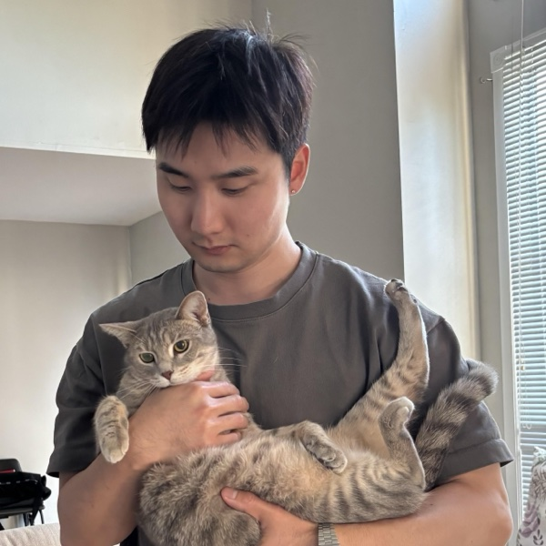

Hyunsik Yoo (柳賢植)
Ph.D. student in Computer Science, University of Illinois Urbana-Champaign
I am advised by Prof. Hanghang Tong and a member of the iDEA-iSAIL joint lab. I received my B.S. and M.S. in Computer Science from Hanyang University, advised by Prof. Sang-Wook Kim.
My research is in data mining and machine learning, with a focus on personalized intelligence systems — recommender systems, personalized LLMs, and conversational and agentic systems — that are adaptive, trustworthy, and responsive to diverse users.
I'm always happy to connect and discuss potential collaborations. Reach me at yoohh0121 AT gmail.com.
News
Education
Positions
Tutorials
Publications
* equal contribution. Full list on Google Scholar.
Honors & Awards
Teaching
- Teaching Assistant, UIUC CS412 Introduction to Data Mining Fall 2023, Fall 2025
- Teaching Assistant, Hanyang University CUL1138 Artificial Intelligence and Machine Learning Spring 2021
- Volunteer Python tutor for high school students, Hanyang University Spring 2019
Hobbies
Reading, Korean/American hip-hop music, movies, travel, watching UFC, and playing with my grey tabby cat.